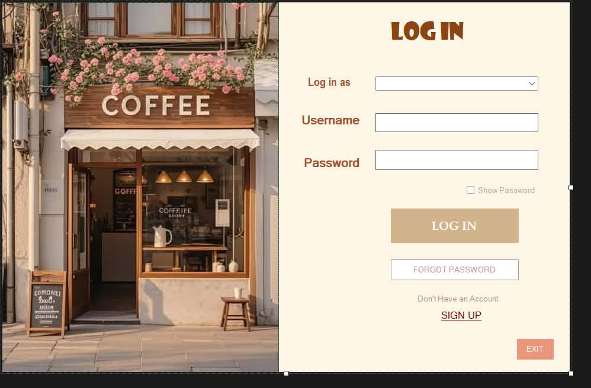
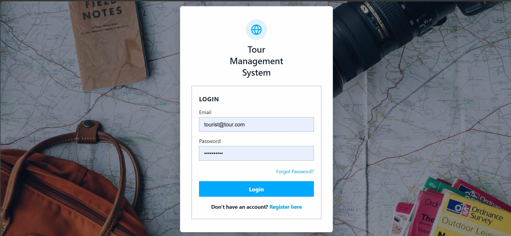
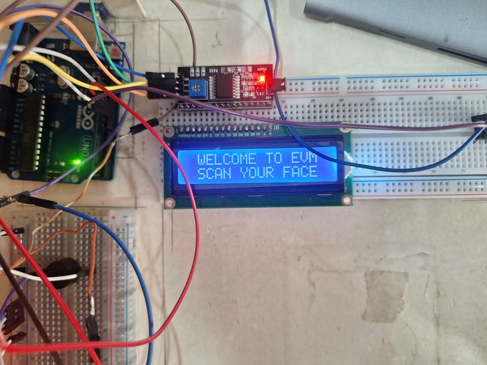
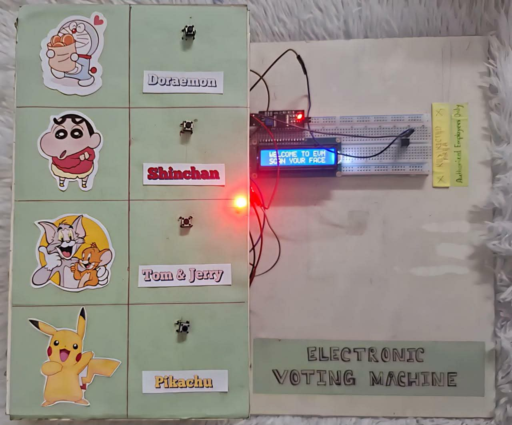
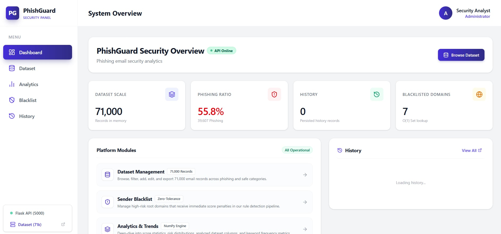

Water Level Detector Using Touch Sensor
A water-level detection project that uses a touch sensor to indicate the level of water.
SELECTED WORK
Explore project images and open a project to see its description and key features.

01 / MANAGEMENT SYSTEM Coffee Shop Management System View project detailsHide detailsA Coffee Shop Management System with a user-friendly login interface. Admins, employees, and customers can securely log in using a username and password, with password recovery, sign-up, and exit options.

02 / MANAGEMENT SYSTEM Tour Management System View project detailsHide detailsA Tour Management System that helps tourists log in and access tour-related services.

03 / EMBEDDED SYSTEM Electronic Voting Machine View project detailsHide detailsAn Electronic Voting Machine that uses face recognition to verify voters and support secure voting.


04 / CYBERSECURITY PhishGuard View project detailsHide detailsPhishGuard is a phishing email detection and security analysis system that identifies phishing emails, manages blacklisted domains, and provides security analytics to protect users from email-based threats.
MORE PROJECTS
A water-level detection project that uses a touch sensor to indicate the level of water.